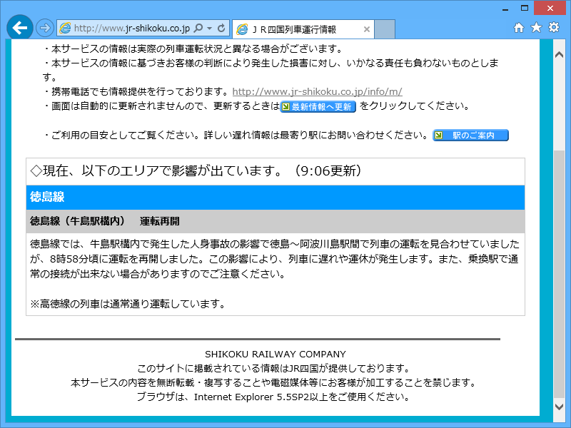
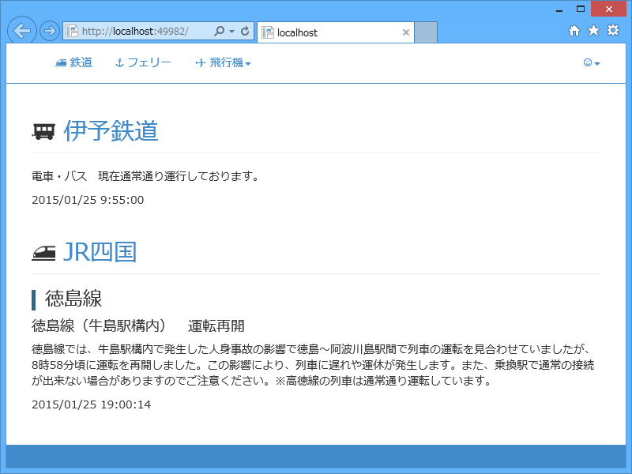

WebMatrix： JR四国が止まったので、運行情報の取得プログラム作るのが捗った。
執筆日時：

密かに待ってました。人身事故ってのがちょっと胸痛むけれど。すみません。でも、これで運行に遅延が発生した時にどんなコードが吐かれるのかわかったやで。
遅れがないとき。
<div ID="delay_info"> <div class="no_delay">◇現在、遅れ等の情報はありません。</div> </div>
遅れがあるとき。
<div ID="delay_info"> <p>◇現在、以下のエリアで影響が出ています（*:**更新）。</p><h4>徳島線</h4> <h5>徳島線（牛島駅構内） 運転再開</h5> <p>徳島線では……<br>※高徳線の列車は……</p> </div>
同じ路線で複数の遅延情報があるケースも考えられるだろうので、タグはこんな感じになるんだろう（と思う）。
p h4 h5 p h5 p : h4 h5 p h5 p :
というわけで、これをいい感じにデータオブジェクトに変換していくわけれだけれど、どうしよう。
とりあえず HtmlAgilityPack でやってみた。
public class DelayInfo { public string Line { get; set; } public string Status { get; set; } public string Message { get; set; } } public static List<DelayInfo> GetJRShikoku() { const string key = "jrshikoku"; const string url = "http://www.jr-shikoku.co.jp/info/"; // キャッシュを探す var result = WebCache.Get(key) as List<DelayInfo>; // キャッシュがヒットしなければ、情報の取得 if (result == null) { using (var client = new WebClient()) { // !! client.Encoding = Encoding.GetEncoding("Shift_JIS"); var doc = new HtmlAgilityPack.HtmlDocument(); var src = client.DownloadString(url); doc.LoadHtml(src); var nodes = doc.DocumentNode // div#delay_info タグを探す .SelectSingleNode(@"//div[@id=""delay_info""]") // 直下のノードを列挙 .ChildNodes // 改行・コメントなどのノードは読み飛ばす .Where(_ => _.NodeType == HtmlNodeType.Element) // 最初の div#no_delay や p は読み飛ばす .Skip(1); var line = string.Empty; var status = string.Empty; result = new List<DelayInfo>(); foreach (var node in nodes) { switch (node.Name) { case "h4": // 線名を記憶 line = node.InnerText; continue; case "h5": // "徳島線（牛島駅構内） 運転再開"を記憶 status = node.InnerText; continue; case "p": // p タグを見つけたらデータをプッシュ result.Add(new DelayInfo() { Line = line, Status = status, Message = node.InnerText, }); break; default: // Do Nothing break; } } // 遅延情報が見つからなかった場合、全線正常のデータをプッシュ if (result.Count == 0) { result.Add(new DelayInfo() { Line = "全線", Status = "正常運行", Message = "現在通常通り運行しております。", }); } } } return result; }

ビューでこのデータを適当にレンダリング。まぁ、まぁ、いい感じかもしれない。もっといろんなケースを見てみたかったけれど、とりあえずこれが正しいとして、Twitter BOT でも実装してみるかな。